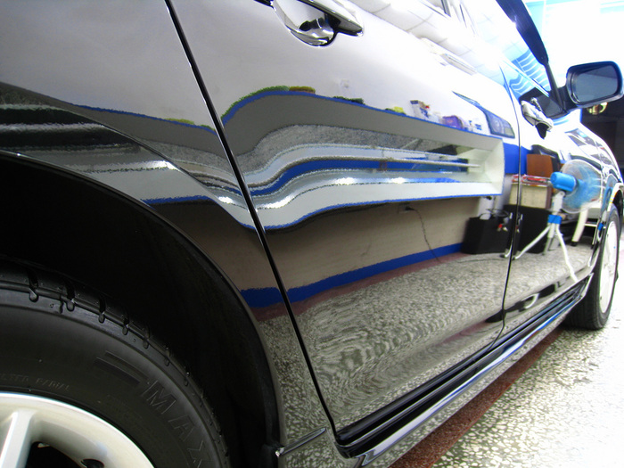

Тефлоновая полировка кузова автомобиля производится для того, чтобы обеспечить минимальную защиту лакокрасочного покрытия от вредного воздействия внешней среды на срок до 3-х месяцев. Данная полировка предусматривает нанесение на ЛКП нового либо недавно окрашенного автомобиля специального состава, основу которого составляет тефлон (PTFE).
Тефлон – полимер прозрачного цвета, отличающийся очень низкой адгезией, то есть он практически не подвержен прилипанию грязи, пыли, песка, а также воды, что, собственно, и обуславливает защитные свойства тефлоновой полировки. Благодаря водоотталкивающим свойствам тефлоновое покрытие автомобиля обеспечивает легкое смывание с поверхности ЛКП инородных частиц, которые являются главной причиной появления мелких царапин на лаке.
Тефлоновая обработка способствует появлению первозданного блеска лакокрасочного покрытия, придает лаку автомобиля свежий вид. Тефлоновое покрытие также позволяет скрыть уже появившиеся микроцарапины на автомобилях, сошедших с конвейера буквально месяц-другой назад. В процессе обработки полироль заполняет собой царапины, создавая видимость абсолютно гладкой поверхности.
Процесс нанесения тефлоновой полировки занимает порядка 40 мин., в течении которых мастер, используя пористую губку, растирает состав по поверхности кузова. Нанесение производится небольшими круговыми движениями, что позволяет избежать необработанных участков. Далее в течении 40 мин. проходит процесс полимеризации состава до появления целостной защитной пленки. В завершении мастер с помощью мелковорсистой салфетки разравнивает поверхность для придания ей глубокого блеска.
Наномойка Антидождь Инновационный автошампунь Полировка «Жидкое стекло»